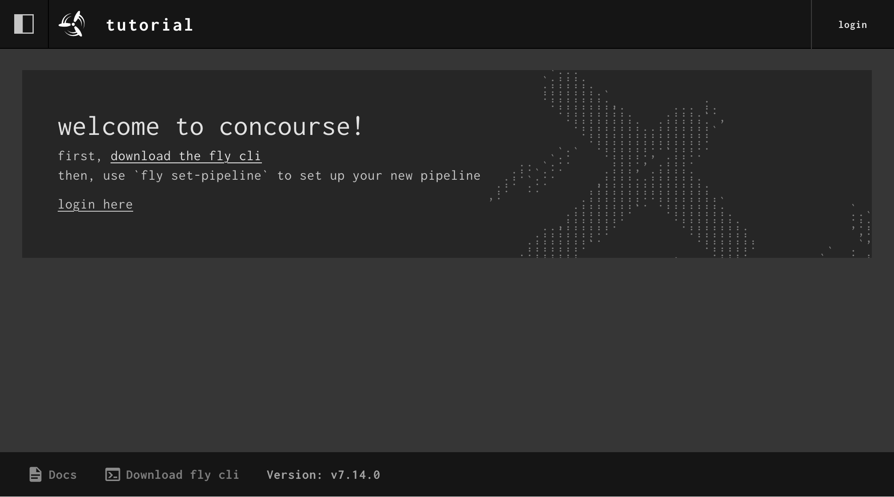

Quick Start
Docker Compose Concourse
Concourse is distributed as a single concourse binary, making it easy to run just about anywhere, especially with Docker.
If you'd like to get Concourse running somewhere quickly so you can start to kick the tires, the easiest way is to use our docker-compose.yml:
$ curl -O https://concourse-ci.org/docker-compose.yml
$ docker-compose up -d
Creating docs_concourse-db_1 ...
Creating docs_concourse-db_1 ... done
Creating docs_concourse_1 ...
Creating docs_concourse_1 ... done
Concourse will be running at localhost:8080 on your machine. You can log in with the
username/password as test/test.

Install Fly
Next, install the fly CLI by downloading it from the web UI. If you're on
version >=v7.14.0 of Concourse, you can visit http://localhost:8080/download-fly.
Otherwise, you can follow these steps to install fly for your OS:
Use fly login to log into your local Concourse as the test user:
You've successfully logged in if you see the following output:
You'll notice that every fly command in this tutorial has to have the target (-t tutorial) specified. This is annoying when you only have one Concourse to target, but it helps ensure you don't trigger a job on the wrong Concourse instance. It will save you from hurting yourself!
Once you've confirmed everything is up and running by logging in through fly and the web UI, you can move onto the next section.
Note
If you have any feedback for this tutorial please share it in this GitHub discussion